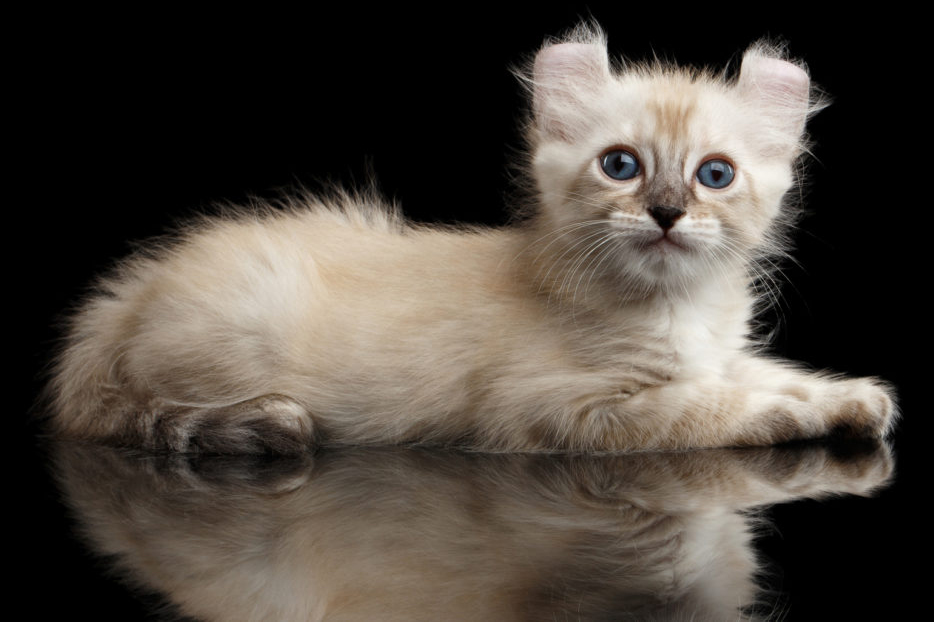

Em 1981 na Califórnia, um filhote foi encontrado por Joe e Grace Ruga. O filhote tinha essa característica única de ter as orelhas que dobravam para trás. Os Rugas trouxeram o filhote para casa, e lhe deram o nome Shulamith, ela se tornou a base da raça Curl Americano. Quando Shulamith teve filhotes, dois deles também tinham orelhas dobradas. Além disso, um dos filhotes com orelhas dobradas era um gato de pelo curto ao invés de exibir a pelagem mais longa da Shulamith. Shulamith e seus marcantes filhotes logo chamaram a atenção dos amantes de gatos e a raça, chamada Curl Americana, começou a atrair pessoas que eram interessadas em fazer criação em cativeiro e em exibi-los. A raça foi reconhecida para exposição na classe campeonato em concursos de beleza de gatos.
O Curl Americano gosta muito de exercícios diários. Eles se divertem na casa tendo árvores com poleiros para gatos para que possam escalar e saltar. Se dado espaço suficiente para se exercitar, eles tendem a manter o peso até que bem. Eles também gostam de brincadeiras interativas. Embora não seja considerado um “gato de colo”, o Curl gosta de ficar perto de pessoas. A cabeça do Curl Americano tem formato de cunha com olhos em formato semelhante a uma noz. A sua cauda é comprida.
A sua característica única, não poderia ser outra, é que suas orelhas são dobradas para trás. As suas orelhas são grandes, e fazem uma delicada curva em um arco de no mínimo 90 graus. O pelo natural nas orelhas é aparente. As pontas das orelhas são flexíveis e podem ser manipuladas sem ele achar ruim. A textura da pelagem do Curl Americano é sedosa, sendo ele de pelo curto ou de pelo longo. A extensão do pelo no Curl de pelo longo está mais para semi-longo do que longo. O Curl Americano é aceito em todas as cores e padrões.
Fonte: www.hillspet.com.br
Voltar